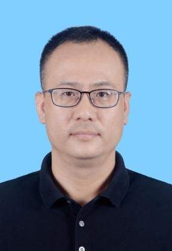

<td align="center" class="tbcolor10" colspan="2" valign="top">
<table border="0" cellpadding="0" height="100%" width="100%">
<tbody><tr><td align="right" height="35px" style="font-size:9pt">
<a href="javascript:window.close()" title="关闭本窗口">关闭窗口</a>｜<a href="print.asp?id=547920" target="_blank" title="打印本页内容">打印张贴版</a>    

</td></tr>
<tr>
<td align="center" height="500" valign="top">
<table border="0" cellpadding="4" cellspacing="0" height="100%" style="border-collapse: collapse;word-break:break-all;" width="86%">
<tbody><tr>
<td align="center" height="80px"><span style="font-family:方正小标宋简体;font-size: 25px;color: #C70E5C">学术讲座——检测实验室智能化发展之路</span></td>
</tr>
<tr>
<td align="center" height="50px" style="font-size: 9pt"><font color="#808080">生命与海洋科学学院　2025/5/12 16:51:00</font><br/> 
<font color="#F8F8F8" style="font-size:9pt">（钟沛基 2022280095）</font></td>
</tr>
<tr>
<td height="300" valign="top">
<p align="left" class="MsoNormal" style="line-height: 150%;"><b><span style='font-size:14.0pt;line-height:150%;font-family:宋体;mso-ascii-font-family:
"Times New Roman";mso-hansi-font-family:"Times New Roman";mso-bidi-font-family:
"Times New Roman";mso-font-kerning:0pt'>讲座时间：</span></b><b><span style='font-size:14.0pt;line-height:150%;font-family:"Times New Roman",serif;
mso-fareast-font-family:宋体;mso-font-kerning:0pt'> <span lang="EN-US">2025</span></span></b><b><span style='font-size:14.0pt;line-height:150%;font-family:宋体;mso-ascii-font-family:
"Times New Roman";mso-hansi-font-family:"Times New Roman";mso-bidi-font-family:
"Times New Roman";mso-font-kerning:0pt'>年</span></b><b><span lang="EN-US" style='font-size:14.0pt;line-height:150%;font-family:"Times New Roman",serif;
mso-fareast-font-family:宋体;mso-font-kerning:0pt'>5</span></b><b><span style='font-size:14.0pt;line-height:150%;font-family:宋体;mso-ascii-font-family:
"Times New Roman";mso-hansi-font-family:"Times New Roman";mso-bidi-font-family:
"Times New Roman";mso-font-kerning:0pt'>月</span></b><b><span lang="EN-US" style='font-size:14.0pt;line-height:150%;font-family:"Times New Roman",serif;
mso-fareast-font-family:宋体;mso-font-kerning:0pt'>13</span></b><b><span style='font-size:14.0pt;line-height:150%;font-family:宋体;mso-ascii-font-family:
"Times New Roman";mso-hansi-font-family:"Times New Roman";mso-bidi-font-family:
"Times New Roman";mso-font-kerning:0pt'>日（周二）晚上</span></b><b><span lang="EN-US" style='font-size:14.0pt;line-height:150%;font-family:"Times New Roman",serif;
mso-fareast-font-family:宋体;mso-font-kerning:0pt'>19:00-21:00<o:p></o:p></span></b></p><p align="left" class="MsoNormal" style="line-height: 150%;"><b><span style='font-size:14.0pt;line-height:150%;font-family:宋体;mso-ascii-font-family:
"Times New Roman";mso-hansi-font-family:"Times New Roman";mso-bidi-font-family:
"Times New Roman";mso-font-kerning:0pt'>讲座地点：</span></b><b><span style='font-size:14.0pt;line-height:150%;font-family:"Times New Roman",serif;
mso-fareast-font-family:宋体;mso-font-kerning:0pt'> </span></b><b><span style='font-size:14.0pt;line-height:
150%;font-family:宋体;mso-ascii-font-family:"Times New Roman";mso-hansi-font-family:
"Times New Roman";mso-bidi-font-family:"Times New Roman";mso-font-kerning:0pt'>深圳大学丽湖校区四方楼北</span></b><b><span lang="EN-US" style='font-size:14.0pt;
line-height:150%;font-family:"Times New Roman",serif;mso-fareast-font-family:
宋体;mso-font-kerning:0pt'>313</span></b><span lang="EN-US" style='font-size:12.0pt;
mso-bidi-font-size:11.0pt;line-height:150%;font-family:"Times New Roman",serif;
mso-fareast-font-family:宋体;mso-font-kerning:0pt'><o:p></o:p></span></p><p align="left" class="MsoNormal" style="line-height: 150%;"><b><span style='font-size:14.0pt;line-height:150%;font-family:宋体;mso-ascii-font-family:
"Times New Roman";mso-hansi-font-family:"Times New Roman";mso-bidi-font-family:
"Times New Roman";mso-font-kerning:0pt'>主</span></b><b><span style='font-size:14.0pt;line-height:150%;font-family:"Times New Roman",serif;
mso-fareast-font-family:宋体;mso-font-kerning:0pt'> </span></b><b><span style='font-size:14.0pt;line-height:
150%;font-family:宋体;mso-ascii-font-family:"Times New Roman";mso-hansi-font-family:
"Times New Roman";mso-bidi-font-family:"Times New Roman";mso-font-kerning:0pt'>讲</span></b><b><span style='font-size:14.0pt;line-height:
150%;font-family:"Times New Roman",serif;mso-fareast-font-family:宋体;mso-font-kerning:
0pt'> </span></b><b><span style='font-size:
14.0pt;line-height:150%;font-family:宋体;mso-ascii-font-family:"Times New Roman";
mso-hansi-font-family:"Times New Roman";mso-bidi-font-family:"Times New Roman";
mso-font-kerning:0pt'>人</span></b><span style='font-size:12.0pt;mso-bidi-font-size:
11.0pt;line-height:150%;font-family:宋体;mso-ascii-font-family:"Times New Roman";
mso-hansi-font-family:"Times New Roman";mso-bidi-font-family:"Times New Roman";
mso-font-kerning:0pt;mso-bidi-font-weight:bold'>：</span><b><span style='font-size:14.0pt;line-height:150%;font-family:宋体;
mso-ascii-font-family:"Times New Roman";mso-hansi-font-family:"Times New Roman";
mso-bidi-font-family:"Times New Roman";mso-font-kerning:0pt'>靳保辉</span></b><b><span style='font-size:14.0pt;line-height:
150%;font-family:"Times New Roman",serif;mso-fareast-font-family:宋体;mso-font-kerning:
0pt'> </span></b><b><span style='font-size:
14.0pt;line-height:150%;font-family:宋体;mso-ascii-font-family:"Times New Roman";
mso-hansi-font-family:"Times New Roman";mso-bidi-font-family:"Times New Roman";
mso-font-kerning:0pt'>博士</span></b><b><span style='font-size:14.0pt;line-height:150%;font-family:"Times New Roman",serif;
mso-fareast-font-family:宋体;mso-font-kerning:0pt'> <span lang="EN-US"><o:p></o:p></span></span></b></p><p align="left" class="MsoNormal" style="line-height: 150%;"></p><p class="MsoNormal" style="text-indent:26.0pt;mso-char-indent-count:2.0"><span style='font-size:13.0pt;font-family:宋体;mso-ascii-font-family:"Times New Roman";
mso-hansi-font-family:"Times New Roman";mso-bidi-font-family:"Times New Roman";
mso-font-kerning:0pt'>靳保辉</span><span style='font-size:13.0pt;font-family:"Times New Roman",serif;
mso-fareast-font-family:宋体;mso-font-kerning:0pt'> </span><span style='font-size:13.0pt;font-family:宋体;mso-ascii-font-family:"Times New Roman";
mso-hansi-font-family:"Times New Roman";mso-bidi-font-family:"Times New Roman";
mso-font-kerning:0pt'>博士，现任深圳海关食品检验检疫技术中心副主任，技术负责人，厦门大学分析化学博士。主要研究方向为食品药物残留检验检测技术，食品真实属性鉴别技术。兼任广东省食品安全专家委员会委员；深圳市食品安全专家委员会专家；深圳市食品标准委员会委员；受聘为国家重点研发计划项目评审专家库专家；国家科学技术奖励评审专家库专家；广东省、深圳市科技评审专家；主持完成科技部重点研发项目</span><span lang="EN-US" style='font-size:13.0pt;font-family:"Times New Roman",serif;
mso-fareast-font-family:宋体;mso-font-kerning:0pt'>1</span><span style='font-size:13.0pt;font-family:宋体;mso-ascii-font-family:"Times New Roman";
mso-hansi-font-family:"Times New Roman";mso-bidi-font-family:"Times New Roman";
mso-font-kerning:0pt'>项，其他科技部、广东省等各类科研项目及课题</span><span lang="EN-US" style='font-size:13.0pt;font-family:"Times New Roman",serif;mso-fareast-font-family:
宋体;mso-font-kerning:0pt'>20</span><span style='font-size:13.0pt;font-family:
宋体;mso-ascii-font-family:"Times New Roman";mso-hansi-font-family:"Times New Roman";
mso-bidi-font-family:"Times New Roman";mso-font-kerning:0pt'>余项，获得省部级科研奖励</span><span lang="EN-US" style='font-size:13.0pt;font-family:"Times New Roman",serif;
mso-fareast-font-family:宋体;mso-font-kerning:0pt'>13</span><span style='font-size:13.0pt;font-family:宋体;mso-ascii-font-family:"Times New Roman";
mso-hansi-font-family:"Times New Roman";mso-bidi-font-family:"Times New Roman";
mso-font-kerning:0pt'>项，发表论文</span><span lang="EN-US" style='font-size:13.0pt;
font-family:"Times New Roman",serif;mso-fareast-font-family:宋体;mso-font-kerning:
0pt'>60</span><span style='font-size:13.0pt;font-family:宋体;mso-ascii-font-family:
"Times New Roman";mso-hansi-font-family:"Times New Roman";mso-bidi-font-family:
"Times New Roman";mso-font-kerning:0pt'>余篇，参编论著</span><span lang="EN-US" style='font-size:13.0pt;font-family:"Times New Roman",serif;mso-fareast-font-family:
宋体;mso-font-kerning:0pt'>4</span><span style='font-size:13.0pt;font-family:
宋体;mso-ascii-font-family:"Times New Roman";mso-hansi-font-family:"Times New Roman";
mso-bidi-font-family:"Times New Roman";mso-font-kerning:0pt'>部，制修订国家、行业标准</span><span lang="EN-US" style='font-size:13.0pt;font-family:"Times New Roman",serif;
mso-fareast-font-family:宋体;mso-font-kerning:0pt'>13</span><span style='font-size:13.0pt;font-family:宋体;mso-ascii-font-family:"Times New Roman";
mso-hansi-font-family:"Times New Roman";mso-bidi-font-family:"Times New Roman";
mso-font-kerning:0pt'>项，授权国际发明专利</span><span lang="EN-US" style='font-size:13.0pt;
font-family:"Times New Roman",serif;mso-fareast-font-family:宋体;mso-font-kerning:
0pt'>2</span><span style='font-size:13.0pt;font-family:宋体;mso-ascii-font-family:
"Times New Roman";mso-hansi-font-family:"Times New Roman";mso-bidi-font-family:
"Times New Roman";mso-font-kerning:0pt'>件，国家发明专利</span><span lang="EN-US" style='font-size:13.0pt;font-family:"Times New Roman",serif;mso-fareast-font-family:
宋体;mso-font-kerning:0pt'>11</span><span style='font-size:13.0pt;font-family:
宋体;mso-ascii-font-family:"Times New Roman";mso-hansi-font-family:"Times New Roman";
mso-bidi-font-family:"Times New Roman";mso-font-kerning:0pt'>件。</span><span lang="EN-US" style='font-size:13.0pt;font-family:"Times New Roman",serif;
mso-fareast-font-family:宋体;mso-font-kerning:0pt'><o:p></o:p></span></p><p class="MsoNormal" style="text-indent:26.0pt;mso-char-indent-count:2.0"><span lang="EN-US" style='font-size:13.0pt;font-family:"Times New Roman",serif;
mso-fareast-font-family:宋体;mso-font-kerning:0pt'>　 </span><span style='font-size:13.0pt;
font-family:宋体;mso-ascii-font-family:"Times New Roman";mso-hansi-font-family:
"Times New Roman";mso-bidi-font-family:"Times New Roman";mso-font-kerning:0pt'>欢迎广大师生前来聆听！</span><span lang="EN-US" style='font-size:13.0pt;font-family:"Times New Roman",serif;
mso-fareast-font-family:宋体;mso-font-kerning:0pt'><o:p></o:p></span></p><p align="right" class="MsoNormal" style="text-align:right;text-indent:273.0pt;
mso-char-indent-count:21.0"><span style='font-size:13.0pt;font-family:宋体;
mso-ascii-font-family:"Times New Roman";mso-hansi-font-family:"Times New Roman";
mso-bidi-font-family:"Times New Roman";mso-font-kerning:0pt;mso-bidi-font-weight:
bold'>生命与海洋科学学院</span><span lang="EN-US" style='font-size:13.0pt;font-family:
"Times New Roman",serif;mso-fareast-font-family:宋体;mso-font-kerning:0pt'><o:p></o:p></span></p><p align="left" class="MsoNormal" style="line-height: 150%;">
</p><p align="right" class="MsoNormal" style="text-align:right;text-indent:26.0pt;
mso-char-indent-count:2.0"><span lang="EN-US" style='font-size:13.0pt;font-family:
"Times New Roman",serif;mso-fareast-font-family:宋体;mso-font-kerning:0pt;
mso-bidi-font-weight:bold'>　　　　　　　　　　　　　　　　　 　　2025</span><span style='font-size:13.0pt;font-family:宋体;mso-ascii-font-family:"Times New Roman";
mso-hansi-font-family:"Times New Roman";mso-bidi-font-family:"Times New Roman";
mso-font-kerning:0pt;mso-bidi-font-weight:bold'>年</span><span lang="EN-US" style='font-size:13.0pt;font-family:"Times New Roman",serif;mso-fareast-font-family:
宋体;mso-font-kerning:0pt;mso-bidi-font-weight:bold'>5</span><span style='font-size:13.0pt;font-family:宋体;mso-ascii-font-family:"Times New Roman";
mso-hansi-font-family:"Times New Roman";mso-bidi-font-family:"Times New Roman";
mso-font-kerning:0pt;mso-bidi-font-weight:bold'>月</span><span lang="EN-US" style='font-size:13.0pt;font-family:"Times New Roman",serif;mso-fareast-font-family:
宋体;mso-font-kerning:0pt;mso-bidi-font-weight:bold'>12</span><span style='font-size:13.0pt;font-family:宋体;mso-ascii-font-family:"Times New Roman";
mso-hansi-font-family:"Times New Roman";mso-bidi-font-family:"Times New Roman";
mso-font-kerning:0pt;mso-bidi-font-weight:bold'>日</span><span lang="EN-US" style='font-size:13.0pt;font-family:"Times New Roman",serif;mso-fareast-font-family:
宋体;mso-font-kerning:0pt'><o:p></o:p></span></p><br/><link href="/szu.css" rel="stylesheet" type="text/css"/></td>
</tr>
<tr><td height="0" style="font-size: 9pt"></td></tr>
<tr><td align="right" style="font-size: 9pt">撰稿：王潮岗　审核：娄素琳  <br/>（更新于2025/5/26 10:13:00）<br/> </td></tr>
</tbody></table>
</td>
</tr>
</tbody></table>
</td>
